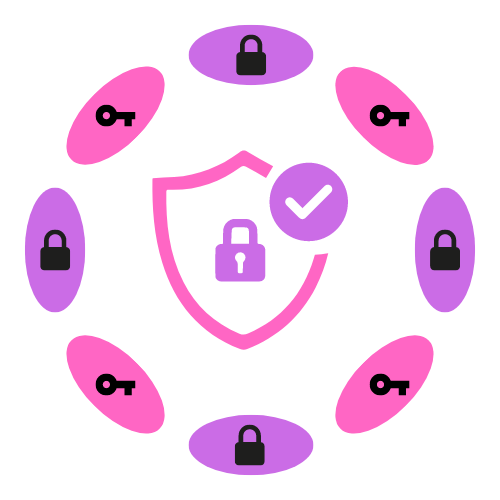

<p-menubar>
    <ng-template pTemplate="start">
        <div class="header" routerLink="/">
            
            <div>Dot Auth</div>
        </div>
    </ng-template>
    <ng-template pTemplate="end">
        <div class="blobs">
            <div *ngIf="!connected" pTooltip="Wallet Not Connected..." class="blob red"></div>
            <label for="address" *ngIf="connected">{{address}}</label>
            <div *ngIf="connected" pTooltip="Wallet Connected..." class="blob green"></div>
        </div>
    </ng-template>
</p-menubar>

<router-outlet></router-outlet>

<div class="spinner-container">
    <div class="spinner-border">
        <span class="spinner" id="spinner"></span>
    </div>
</div>

<p-confirmDialog #cd [breakpoints]="{'960px': '75vw', '640px': '95vw'}" [style]="{width: '30vw'}">
    <ng-template pTemplate="footer">
        <button type="button" pButton class="p-button-success" icon="pi pi-check" iconPos="right" label="Confirm" (click)="cd.accept()"></button>
    </ng-template>
</p-confirmDialog>

<p-toast position="top-center"></p-toast>

<p-dialog [breakpoints]="{'960px': '50vw', '640px': '95vw'}" [(visible)]="!connected" [closable]="false" [modal]="true" [style]="{width:'50vw'}">
    <ng-template pTemplate="header">
        <div>
            <i class="pi pi-exclamation-triangle" [ngStyle]="{color:'var(--orange-500)'}"></i>
            <b> Wallet Not Connected</b>
        </div>
    </ng-template>
    {{ message }}
    <ng-template pTemplate="footer">
        <button (click)="connectWallet()" pButton type="button" label="Connect Wallet" icon="pi pi-wallet" iconPos="right"></button>
    </ng-template>
</p-dialog>